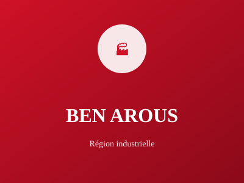

Banlieue sud de Tunis

Ben Arous est la banlieue sud-est de Tunis, formant une zone industrielle importante avec une forte activité économique. Elle accueille plusieurs zones industrielles et parcs technologiques qui contribuent au développement économique national.